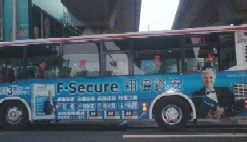

（３４０）台湾話その２ 車窓撃破装置
|
台北で乗り合いバスに乗った。どのバスみんなも新型で窓が大きい。

乗ってから ふと前をみると、その大きな窓に「車窗撃破装置」と書いたシートが貼ってあった。※窗＝窓
非常のとき 窓を破壊するためには違いないが、どんな装置なのか気になった。（“撃破装置”というくらいだから、どっかのボタンを押すと窓が一挙に破壊されるのかな....）などと思ったが、そんな装置らしきものは見あたらない。
シートには窓の四隅を示したような絵がついている。そのあたりに押しボタンでもあるのかなと思ったが、それも見あたらない。しかしシートの左横の窓枠に、なんか赤いモノがブラさがっている。
これは何だろうと思ってよくみると、長さ20センチくらいの小型のハンマーだった。おぉ これで窓ガラスを撃破するのか。意図はよく分かったが、これが撃破装置とは ちと大げさのような(^-^；。それに厚みもタップリありそうな窓ガラス、これで撃破できるのか不思議に思った。
|
熱血の志豊 投稿日：2010/07/14(Wed)
浅見さん、久し振りだな^^
その撃破装置は大げさじゃない。
ガラスの四角の所に力をあまり出さないで、ガラスが撃破できる^^
|
あさみ 投稿日：2010/07/15(Thu)
久し振りです、熱血の志豊さん(^-^)/
>ガラスの四角の所に力をあまり出さないで、
ちゃんと考えて設置してあるのですから、もちろん大いに役立つでしょうね。じつはσ(-_-)が面白いと思ったのは、「撃破装置」というネーミングです。
「撃破装置」と聞くと、σ(-_-)は “大がかりな機械装置” のようなイメージを持ってしまいます。それがハンマー１本のことなので、面白いなぁと思ったわけです。もしσ(-_-)が窓にシールを貼るとしたら、単に「窓用ハンマー」というくらいにします。(^-^；
オマケ
バスの中で この写真を撮ろうとしたが、ちょうど若い女性が その窓の前に立っていた。
これでは写真が撮れないので少し横に移動してほしかったが、σ(-_-)は中国語が話せない(ノд｀) 仕方ないので そのまま女性の横に立ち、しばらく待っていた。すると（怪しいオヤジ）と思われたのか(>_<)、スーっと奥の方に移動してくれた。
|